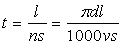
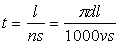
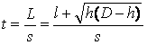
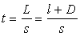
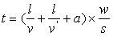
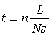

机械加工的标准资料
机械加工的作业时间基本由准备时间、处理时间、机械加工时间与宽放时间组成。宽放时间有统一考虑，下面主要介绍其余3种时间的标准资料。
(一)准备时间
取作业为单元，确定其时间值，并规定各项工作由哪些作业组成，按此汇总可确定标准时间。准备时间大致有两类：一类是通用的准备时间；一类是按机械类别或工作类别特有的准备时间。表10-2列举了各种机械加工通用的准备时间，它是按每批加工只发生一次考虑的。表10-3列举了许多机械特有的准备时间，并提出了一个波动范围。特有的准备时间再加上通用的准备时间，便可求得按工作类别计算的总准备时间。表中所列代表值与正确估计值比，误差约在±15％以内，按每批10件计，估计误差在1.5％以下。与主体时间比，此误差值不大。
表10-2 通用准备时间
|
单位作业 |
时间/min |
|
领取图样与作业传票 分析图样 整理传票 借用工具与检测器具 整理工具与检测器具 查点材料 整理产品 清扫机械 |
2.00 1.00 0.50 4.00 0.50 0.50 0.50 1.00 |
|
合计 |
10.00 |
注：工具集中研磨
表10-3 各类机械、各类工作的准备时间
|
机械 |
工 作 |
特有准备时间/min |
总准备时间 /min |
使用工具 |
|
|
范围 |
代表值 |
||||
|
车床 |
1.33 |
5.5～8.0 |
7.0 |
17.0 |
|
|
铣床 |
使用分度盘 使用虎头钳 使用圆形或平面 使用角板 |
18.4～19.2 5.6～11.6 14.1～14.3 5.35 |
19.0 9.0 14.0 5.0 |
29.0 19.0 24.0 15.0 |
|
|
手钻 |
无夹具 有夹具，使用中小角钢、带钢 |
6.6 11.4～13.4 |
7.0 12.0 |
17.0 22.0 |
|
|
立钻 |
有夹具，使用中小角钢、带钢 有夹具，使用大型角钢、带钢 |
11.9～14.6 21.1～23.1 |
13.0 22.0 |
23.0 32.0 |
|
|
滚铣床 |
一般对象 |
12.0～16.0 |
14.0 |
24.0 |
|
|
外面磨床 内画磨床 |
一般对象 一般对象 |
10.0 14.0 |
10.0 14.0 |
20.0 24.0 |
|
(二)处理时间
处理时间大体包括：材料与在制品处理、装卸、扶正、起动与停止、刀具移动、测量、夹具处理、工具处理及其他机械操作。处理时间依机械设备的种类与作业内容的不同，取各种固定的或变动的时间值。例如材料搬运与运输距离和重量因素有关，而与其他因素(如机械种类)无关。表10-4列举了工件附带时间的标准数据。
表10-4 工件附带时间的标准资料（工件动作）（单位：min）
|
项目 编号 |
工件动作 |
高度 |
距离 /m |
≤ 1人 |
2.5～ 1人 |
5～ 1人 |
≤ |
> |
|||
|
增加 1人 |
链滑车 |
吊车 |
链滑车 |
吊车 |
|||||||
|
1 2 3 4 5 6 7 8 9 10 |
工件直线搬运 工件直线搬运 工件直线搬运 工件直线搬运 工件直线搬运 将对象移向工作场所 |
自桌上 自地面 |
2 5 10 20 40 1 2 |
0.04 0.10 0.15 0.29 0.49 0.08 0.10 |
0.05 0.10 0.16 0.29 0.49 0.09 0.11 |
0.10 0.13 0.19 0.35 0.56 0.19 |
0.13 0.22 0.27 0.50 0.75 0.15 0.26 |
0.18 0.35 0.80 1.46 2.66 1.55 |
1.50 1.90 2.25 2.66 2.91 1.50 |
0.18 0.35 0.80 1.46 2.66 1.55 |
1.50 1.92 2.25 2.66 2.91 1.50 |
(三)机械加工时间
机加工时间可用理论公式计算。下面是几种常用的机械加工的加工时间计算公式。
(1)车削时间。车削时间的参考计算公式：
式中，t：切削时间（min）；l：加工件长度（mm）；s：每次进刀量（mm/r）；
n：转速（r/s）；d：工件直径（mm）；v；切削速度（m/s）。
(2)钻孔时间。钻孔时间的参考计算公式：
式中，t：切削时间（min）；l：钻孔长度（mm）；s：每转进刀量（mm/r）；
n：转速（r/s）；d：直径（mm）；v；切削速度（m/s）。
(3)铣削时间。
横铣时间的参考计算公式：
竖铣时间的参考计算公式：
式中，t：切削时间（min）；L：铣的总送刀长度（mm）；l：工件被切削面的长度（mm）；
h：进刀深度（mm）；D：刀具直径（mm）；s：铣的送刀量（mm/min）。
(4)龙门刨。切削时间的参考计算公式：
式中，t：切削时间（min）；v为切削速度（m/s）；v’：倒退速度（m/s）；a：床的行程前后的增加时间（min）；w：加工件的宽度（min）；s：送刀量（mm/行程）。
(5)圆筒磨削。磨削时间的参考计算公式：
式中，t：磨削时间（min）；L：工件长度与磨轮宽度之和（mm）；s：工件每转1次的磨轮送入量（mm/min）；N：工件每分转数（r/min）；n：磨削次数（次/min）。